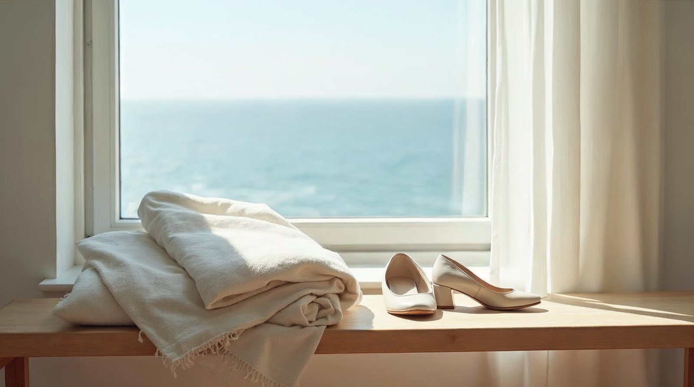

이종호 한의사 감수좋은꿈참사랑한의원 대표원장 (한의사 면허번호 19769)발행 2026-11-26 · 수정 2026-11-26
이 글의 차례
하루 종일 서서 일하고 퇴근한 저녁, 소파에 앉아 바지를 걷어 봅니다. 종아리 안쪽에 푸르스름한 핏줄이 구불구불 올라와 있습니다. 예전에는 희미하던 줄이 어느새 손으로 만져질 만큼 도드라져 있습니다. 다리는 돌덩이를 매단 것처럼 무겁고, 밤이 되면 종아리가 저릿하게 당기기도 합니다.
진료실에서 다리 이야기를 꺼내시는 분들 가운데 이런 모습을 함께 보여 주시는 경우가 꽤 있습니다. 대개는 "보기 싫어서", "나이 들면 다 그런 줄 알고" 오래 두셨다가, 저녁마다 무거움이 심해지거나 밤에 쥐가 자주 나서 오십니다.
하지정맥류는 다리의 정맥, 그러니까 심장으로 피를 돌려보내는 혈관이 늘어나고 구불구불해진 상태입니다. 겉모습만의 문제로 여기기 쉽지만, 다리의 무거움과 붓기, 저린 느낌, 피부 변화와 함께 오는 경우가 많아 생활의 불편으로 이어집니다.
저는 이런 분들께 먼저 혈관 상태를 정확히 확인하는 일과 생활에서 다리의 부담을 줄이는 일을 나란히 가자고 말씀드립니다. 이 글에서는 하지정맥류가 무엇인지, 왜 생기는지, 비슷한 다리 불편과 어떻게 다른지, 그리고 생활과 진료에서 무엇을 살피는지 정리해 보겠습니다.
하지정맥류는 어떤 상태인가요
다리의 정맥 안에는 피가 아래로 거꾸로 흐르지 않도록 막아 주는 작은 판막이 있습니다. 종아리 근육이 수축하며 피를 위로 밀어 올리면, 이 판막이 문처럼 닫혀서 피가 다시 내려오지 못하게 합니다.
이 판막이 약해지거나 제대로 닫히지 않으면 피가 아래로 고이게 됩니다. 고인 피가 혈관 벽을 밀어내면서 혈관이 늘어나고 구불구불해집니다. 이것이 하지정맥류입니다. 주로 종아리 뒤쪽과 안쪽, 무릎 뒤, 허벅지 안쪽에 잘 생깁니다.
모양에 따라 정도도 다양합니다. 피부 바로 아래 가는 실핏줄이 거미줄처럼 퍼져 보이는 경우부터, 손가락 굵기의 혈관이 울퉁불퉁 튀어나오는 경우까지 있습니다. 겉으로 보이는 굵기와 불편의 정도가 꼭 같지는 않아서, 가는 혈관만 보여도 다리가 많이 무거운 분이 계십니다.
왜 하지정맥류가 생길까요
하지정맥류는 한 가지 이유보다 여러 요인이 겹쳐 생기는 경우가 많습니다. 다리로 내려간 피가 다시 올라오기 어려운 상황이 오래 이어질수록 판막과 혈관 벽에 부담이 쌓입니다.
- 하루 대부분을 서서 일하거나 오래 앉아 지내는 경우
- 부모나 형제에게 하지정맥류가 있는 경우
- 임신과 출산을 겪은 경우
- 체중이 늘어 다리에 실리는 부담이 커진 경우
- 나이가 들며 혈관 벽과 판막이 약해진 경우
- 걷는 시간이 적어 종아리 근육을 잘 쓰지 않는 경우
이 가운데 서서 일하는 시간은 특히 큰 영향을 줍니다. 미용, 조리, 판매, 교육처럼 하루 대부분을 한자리에 서 있어야 하는 일은 종아리 근육이 거의 움직이지 않으면서 피가 다리에 머무는 시간이 깁니다. 같은 서 있기라도 걷는 것과 가만히 서 있는 것은 다리에 주는 부담이 꽤 다릅니다.
임신 중에는 몸속 피의 양이 늘고, 커진 자궁이 배 속 정맥을 누르며, 호르몬 변화로 혈관 벽이 느슨해집니다. 그래서 임신 중에 처음 정맥류가 보이거나 심해지는 분이 많습니다. 출산 뒤 일부는 줄어들기도 하지만, 그대로 남는 경우도 있습니다.
다리 부종이나 근육 뭉침과는 어떻게 다른가요
저녁마다 다리가 붓고 양말 자국이 깊게 남는 부종은 하지정맥류와 함께 오기도 하지만, 따로 오기도 합니다. 짠 음식, 오래 서 있기, 생리 전, 일부 약, 심장이나 콩팥, 갑상선 문제 등 원인이 다양합니다. 핏줄이 도드라지지 않는데 양쪽 다리가 고르게 붓는다면 다른 원인을 함께 살펴야 합니다.
근육 뭉침은 운동이나 오래 걷기 뒤 종아리가 단단하게 뭉치고 누르면 아픈 것이 중심입니다. 핏줄의 모양 변화는 없고, 쉬거나 풀어 주면 비교적 빨리 가라앉습니다. 하지정맥류는 오래 서 있을수록 무거움이 심해지고, 다리를 올리고 쉬면 덜해지는 경향이 있습니다.
밤에 종아리에 쥐가 나는 것은 하지정맥류와 함께 오기도 하지만, 물과 전해질, 근육 피로, 일부 약과도 관련이 있습니다. 그래서 쥐가 잦다는 말씀만으로 원인을 단정하지 않고, 다리 모양과 붓기, 생활을 함께 봅니다.
허리에서 내려오는 신경 문제로 다리가 저리고 당기는 경우도 있습니다. 이때는 엉덩이에서 다리 뒤쪽으로 뻗치는 느낌이 있고, 허리를 숙이거나 펴는 자세에 따라 달라지는 경우가 많습니다. 다리의 불편이 어디에서 시작되는지를 함께 구분합니다.
한의학에서는 다리의 무거움을 어떻게 보나요
한의학에서는 피와 물이 고르게 돌지 못하고 한곳에 머무는 상태를 중요하게 봅니다. 저녁마다 다리가 무겁고 붓고, 핏줄이 짙게 비치며, 오래 서 있으면 저릿한 느낌은 아래로 내려간 흐름이 다시 올라오지 못하고 고여 있다는 신호로 읽습니다.
이런 분들은 몸이 쉽게 지치고, 아침보다 오후에 몸이 처지며, 손발이 차거나 반대로 다리에 열감이 도는 등 결이 다양합니다. 그래서 같은 하지정맥류라도 몸 전체의 기운, 소화, 잠을 함께 살펴 어느 쪽부터 돌볼지를 정합니다.
다만 혈관 모양이 이미 크게 늘어난 경우에는 생활 관리나 한의원 진료만으로 모양을 되돌리기 어렵습니다. 혈관 상태는 혈관을 보는 병원에서 확인하고, 한의원에서는 그 곁에서 다리의 무거움과 몸의 흐름을 함께 살핀다고 생각해 주세요.
정도에 따라 어떻게 나눠 보나요
하지정맥류는 겉으로 보이는 모습과 피부 변화에 따라 단계를 나눠 봅니다. 처음에는 가는 실핏줄만 보이다가, 시간이 지나며 굵은 혈관이 튀어나오고, 더 진행되면 발목 주변 피부가 갈색으로 짙어지거나 딱딱해지기도 합니다.
피부 변화는 특히 눈여겨보셔야 합니다. 발목 안쪽 피부가 거뭇해지고 가렵거나 각질이 일어나며, 긁은 자리가 잘 아물지 않는다면 다리에 피가 오래 고여 피부까지 영향을 받고 있다는 뜻일 수 있습니다. 이때는 혈관을 보는 병원에서 상태를 먼저 확인하시는 것이 좋습니다.

계절과 생활에 따라 달라지는 다리
여름에는 더위에 혈관이 넓어져 다리가 더 무겁고 붓기 쉽습니다. 반대로 겨울에는 움직임이 줄고 두꺼운 옷과 부츠로 다리를 오래 조이면서 저녁 무거움이 심해지는 분도 계십니다. 계절마다 어느 때 더 불편한지를 알아 두면 미리 챙기기 쉬워집니다.
장거리 비행이나 버스 여행처럼 오래 앉아 있어야 하는 날도 조심하셔야 합니다. 한두 시간마다 일어나 통로를 걷고, 앉아서도 발목을 위아래로 까딱이며, 물을 조금씩 자주 드시는 습관이 다리를 지켜 줍니다.
먼저 이렇게 여쭙니다
처음 오시면 저는 대략 이런 순서로 여쭙니다. 미리 생각해 오시면 이야기가 수월해집니다.
- 핏줄이 튀어나온 것을 언제 처음 알아차리셨나요?
- 하루에 서 있는 시간과 앉아 있는 시간은 어느 정도인가요?
- 다리가 무겁거나 붓는 것은 하루 중 언제 가장 심한가요?
- 밤에 종아리에 쥐가 나거나 다리가 가렵고 화끈거린 적이 있나요?
- 가족 가운데 하지정맥류가 있는 분이 계신가요?
- 임신, 출산, 호르몬제 복용, 드시는 약이 있나요?
혈관을 보는 병원에서 이미 검사를 받으셨다면 결과지나 진료 기록을 함께 가져와 주세요. 어떤 혈관에 문제가 있는지 알면 생활에서 신경 쓸 부분을 더 정확히 말씀드릴 수 있습니다.
일상에서 먼저 해 볼 수 있는 것
하지정맥류는 생활에서 다리의 부담을 덜어 주는 것만으로도 무거움과 붓기가 한결 덜해지는 경우가 많습니다. 아래 가운데 지금 하기 쉬운 것부터 골라 보세요.
- 한 시간에 한 번은 자리에서 일어나 몇 걸음 걷기
- 서 있을 때는 발뒤꿈치를 들었다 내리는 동작 자주 하기
- 퇴근 뒤 10분에서 15분 정도 다리를 심장보다 조금 높이 올리고 쉬기
- 하루 20분에서 30분 정도 걷기
- 다리를 꼬고 오래 앉지 않기
- 허리와 다리를 꽉 조이는 옷을 오래 입지 않기
걷기는 하지정맥류에 가장 좋은 운동 가운데 하나입니다. 걸을 때마다 종아리 근육이 펌프처럼 움직여 고인 피를 위로 밀어 올려 줍니다. 수영이나 실내 자전거도 다리에 무리를 덜 주면서 종아리를 쓰게 해 줍니다.
의료용 압박 스타킹은 다리 바깥에서 혈관을 고르게 눌러 피가 고이는 것을 줄여 줍니다. 오래 서서 일하는 날 아침부터 신으면 저녁의 무거움이 덜하다는 분이 많습니다. 다만 압력과 길이를 맞게 골라야 하고, 다리 동맥이나 피부에 문제가 있으면 맞지 않을 수 있으니 진료하는 선생님과 상의하고 고르세요.
짠 음식을 줄이고 물을 적당히 드시는 것도 붓기를 덜어 줍니다. 체중이 늘었다면 조금씩 줄이는 것이 다리에 실리는 부담을 덜어 줍니다. 뜨거운 탕에 오래 있거나 사우나를 자주 하면 혈관이 넓어져 무거움이 심해질 수 있어, 미지근한 물로 짧게 씻는 편을 권합니다.
잠잘 때 발 아래에 얇은 베개나 수건을 접어 받쳐 다리를 조금 높여 두는 것도 도움이 됩니다. 너무 높게 올리면 허리가 불편할 수 있으니, 발이 심장보다 살짝 높은 정도면 충분합니다.
한의원에서 함께 살필 수 있는 경우
- 저녁마다 다리가 무겁고 붓는 느낌이 오래 이어지는 경우
- 오래 서서 일한 날 밤에 종아리가 저리고 쥐가 자주 나는 경우
- 다리의 불편과 함께 쉽게 지치고 손발이 찬 경우
- 출산 뒤 다리의 무거움과 붓기가 오래 남은 경우
- 혈관 치료를 받았거나 받는 중이면서 다리의 피로가 이어지는 경우
좋은꿈참사랑한의원에 오시면 먼저 아래 '먼저 확인이 필요한' 신호가 없는지부터 확인합니다. 그다음 다리를 직접 보고, 맥을 짚으며 붓기와 무거움이 언제 심한지, 잠과 소화, 손발 온도를 여쭙습니다.
진찰한 내용을 바탕으로 걷기와 쉬는 자세, 압박 스타킹 같은 생활 관리 가운데 먼저 할 것을 정하고, 침이나 한약 상담 가운데 지금 상태에 맞는 것을 함께 정합니다. 핏줄이 튀어나온 자리는 직접 자극하지 않고 피해서 진료합니다. 한약을 상의할 때는 드시는 약을 모두 확인하고 신중히 정합니다.
임신 중이라면 먼저 알려 주시고 산부인과와 상의하시도록 안내합니다. 혈관 시술이나 수술 여부는 혈관을 보는 병원에서 정하실 일이고, 처방받은 약은 상의 없이 멈추지 않습니다. 한의원 진료는 그 곁에서 다리의 피로와 몸의 흐름을 함께 살피는 자리입니다.
이렇게 기록해 오시면 상담이 쉬워집니다
2주 정도만 간단히 적어 와 주세요. 다리의 불편이 어떤 하루와 엮여 있는지가 보이기 시작합니다.
- 하루 동안 서 있던 시간과 걸은 시간
- 저녁 다리 무거움을 0부터 10까지 숫자로
- 밤에 쥐가 났던 날
- 압박 스타킹을 신은 날과 안 신은 날의 차이
- 짠 음식을 많이 먹은 날, 생리 전후 표시
- 다리 사진(같은 자세, 같은 밝기로 한 달에 한 번)
빠진 날이 있어도 괜찮습니다. 숫자 몇 줄만 모여도 다리가 무거운 날의 공통점이 보이기 시작합니다. 사진은 혈관 모양의 변화를 비교하는 데 쓸모가 있습니다. 매번 같은 자리에서 같은 자세로 찍어 두시면 진료실에서 함께 보기에 좋습니다.
오래 서 있는 다리를 위해
하지정맥류는 하루아침에 생기지 않은 만큼, 다리를 돌보는 일도 하루의 작은 습관에서 시작됩니다. 한 시간에 한 번 일어나기, 퇴근 뒤 다리 올리기, 하루 30분 걷기. 이 세 가지만 꾸준히 하셔도 저녁의 다리가 조금씩 가벼워지는 것을 느끼실 수 있습니다.
이번 주에는 그 가운데 하나만 골라 보세요. 다음에 오시면 기록을 함께 보며 다리가 어떻게 답했는지부터 살펴보겠습니다.
이런 증상은 먼저 확인이 필요합니다
- 한쪽 다리만 갑자기 붓고 단단해지며 열감과 통증이 생긴 경우
- 다리가 부은 채로 갑자기 숨이 차거나 가슴이 아프고, 정맥류가 터져 피가 멈추지 않는 경우
이런 신호가 있으면 한의원보다 가까운 병원이나 응급실을 먼저 찾으세요.
함께 읽으면 좋은 글
- 저녁마다 다리가 붓고 양말 자국이 깊게 남을 때, 부종은 무엇을 나눠 살피나요?
- 밤마다 종아리에 쥐가 나서 깨는 근육 경련은 왜 생기고 무엇을 살피나요?
- 임신 중 발과 다리가 붓는 부종은 어디까지 흔하고, 생활에서는 어떻게 살피나요?
- 오래 앉아 공부하면 다리가 붓고 저릴 때는 무엇을 살피나요?
- 하루 종일 서서 강의하면 허리와 종아리가 뻐근할 때는 어떻게 하나요?

여쭙는 것
- 핏줄이 튀어나온 것을 언제 처음 알아차리셨나요?
- 하루에 서 있는 시간과 앉아 있는 시간은 어느 정도인가요?
- 다리가 무겁거나 붓는 것은 하루 중 언제 가장 심한가요?
생활에서 해 볼 것
- 한 시간에 한 번은 자리에서 일어나 몇 걸음 걷기
- 서 있을 때는 발뒤꿈치를 들었다 내리는 동작 자주 하기
- 퇴근 뒤 10분에서 15분 정도 다리를 심장보다 조금 높이 올리고 쉬기
한의원에서 함께 살필 것
- 저녁마다 다리가 무겁고 붓는 느낌이 오래 이어지는 경우
- 오래 서서 일한 날 밤에 종아리가 저리고 쥐가 자주 나는 경우
- 다리의 불편과 함께 쉽게 지치고 손발이 찬 경우
먼저 확인이 필요한 신호
- 한쪽 다리만 갑자기 붓고 단단해지며 열감과 통증이 생긴 경우
- 다리가 부은 채로 갑자기 숨이 차거나 가슴이 아프고, 정맥류가 터져 피가 멈추지 않…
한눈에 보는 표
| 구분 | 핵심 |
|---|---|
| 여쭙는 것 | 핏줄이 튀어나온 것을 언제 처음 알아차리셨나요? 하루에 서 있는 시간과 앉아 있는 시간은 어느 정도인가요? |
| 생활에서 해 볼 것 | 한 시간에 한 번은 자리에서 일어나 몇 걸음 걷기 서 있을 때는 발뒤꿈치를 들었다 내리는 동작 자주 하기 |
| 한의원에서 함께 살필 것 | 저녁마다 다리가 무겁고 붓는 느낌이 오래 이어지는 경우 오래 서서 일한 날 밤에 종아리가 저리고 쥐가 자주 나는 경우 |
| 먼저 확인이 필요한 신호 | 한쪽 다리만 갑자기 붓고 단단해지며 열감과 통증이 생긴 경우 다리가 부은 채로 갑자기 숨이 차거나 가슴이 아프고, 정맥류가 터져 피가 멈추지 않는 경우 |
자주 묻는 질문
하지정맥류는 저절로 없어지나요?
이미 늘어난 혈관이 저절로 원래대로 돌아가기는 어렵습니다. 다만 생활 관리로 무거움과 붓기가 덜해지는 경우가 많고, 혈관 치료가 필요한지는 혈관을 보는 병원에서 확인하시는 것이 좋습니다.
압박 스타킹은 아무거나 신어도 되나요?
압력과 길이에 따라 맞는 것이 다르고, 다리 동맥이나 피부에 문제가 있으면 맞지 않을 수 있습니다. 진료하는 선생님과 상의해 고르시는 것이 좋습니다.
핏줄이 튀어나온 자리에 침을 맞아도 되나요?
튀어나온 혈관 자리는 직접 자극하지 않고 피해서 진료합니다. 피를 묽게 하는 약을 드신다면 처음에 꼭 알려 주세요.
운동은 어떤 것이 좋나요?
걷기, 수영, 실내 자전거처럼 종아리 근육을 리듬 있게 쓰는 운동이 좋습니다. 무거운 것을 들고 숨을 참으며 힘을 주는 운동은 다리에 부담을 줄 수 있어 무게를 가볍게 하시길 권합니다.
좋은꿈참사랑한의원은 재진 때 지난번 이야기부터 이어서 여쭙니다. 진료시간과 예약은 오시는 길에서 확인하세요.
어디서 상담받을 수 있나요?
좋은꿈참사랑한의원은 서울 동작구 만양로2길 2 신성빌딩 3층·5층(서울 동작구 상도동, 7호선 상도역 3번 출구 근처)에 있습니다. 한의사 3명(이종호 대표원장, 조영기 수석진료원장, 정원영 진료원장)이 진료합니다. 진료시간은 평일 09:30~20:00(점심 13:00~14:00), 토·일·공휴일 09:30~15:00이며, 방문 전 전화로 확인을 권합니다. 예약은 네이버 예약, 카카오톡 상담, 전화 02-815-7510로 받습니다.
이 글은 일반적인 건강 정보이며 개인의 진단이나 치료를 대신하지 않습니다. 증상이 있거나 복용 중인 약이 있다면 진료를 통해 확인하세요. 치료 효과는 개인마다 다를 수 있습니다.
작성 기준: 일반적으로 알려져 있는 건강 정보를 참고해 정리했습니다(대표원장 감수). 증상 기록은 1~2주 동안 하루 1회, 비슷한 시간에 적어 오시면 지난 상태와 비교하기 쉽습니다.